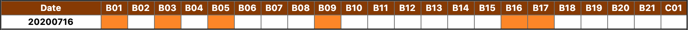
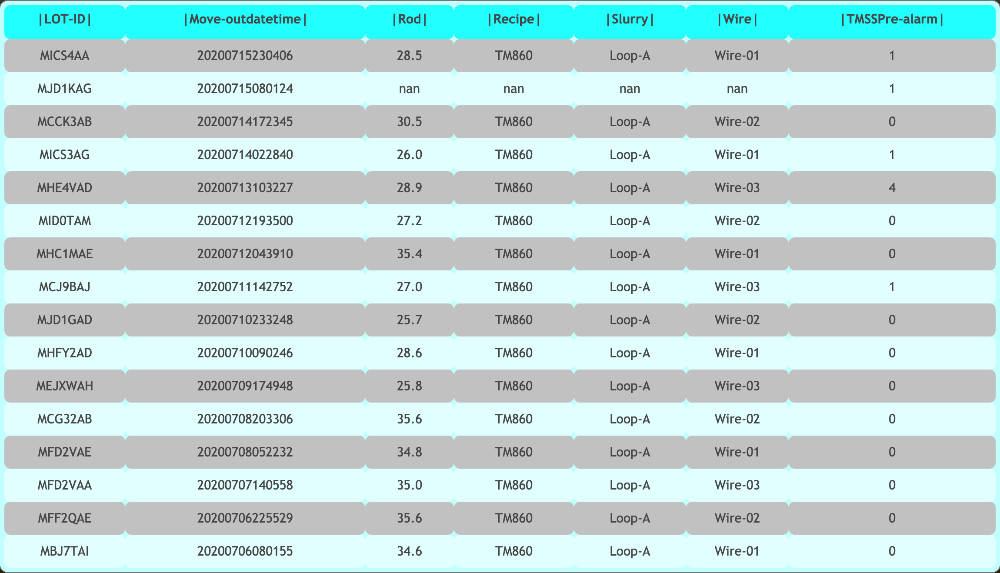
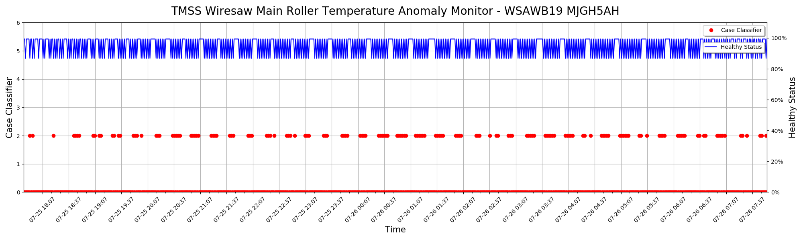

There is one table show the monthly confusion matrix value:
There is one table show the monthly confusion matrix value:Please select one of prediction model:
Click here to see the model introduction:
Desctiption : How to operate and what contents does display provide There is one table show the monthly confusion matrix value:
| Confusion Matrix | Actual |
|---|
| Predict |
|
|---|
After you select dates and click 'Show Results', you would see the similar chart. Here you should know what the label and what is that chart legends:
 Chart result tile contains tool name, lot ID and the pre-alarm mechanism we use in this model. In above example, we choose "WSAWB01", on 2020-06-07 (We check the move out time for this lot).
Chart result tile contains tool name, lot ID and the pre-alarm mechanism we use in this model. In above example, we choose "WSAWB01", on 2020-06-07 (We check the move out time for this lot).
Next, on the right hand side you will see a bunch of legends:
As for the other option is "HPM results". It will show the deeper prediction analysis by using Hierarchical Prediction Mechanism, whose basic principle is to use the same production environment to judge whether if there exists the potential B/S threat. For example, when you select the dates you wanna to see, let's say "2020-07-16", then you would see the similar table:
This table means at the date 2020-07-16, those products finished on 2020-07-15 have more "PI-Alarm" comparing to similar production environment in those tools, in this case, WSAWB01, WSAWB03, WSAWB05, WSAWB09, WSAWB16 and WSAWB17. Furthermore, to see why the table is color-changed we also add the function in this table. Let's say we click 'B09' at '2020-07-16', you might see the similar table:
This table indicates the previous 15 products from 'B09'. As you can see at '2020-07-15', product-[MICS4AA] has 1 TMSS Pre-alarm, however, in the same environment, product-[MHFY2AD] has 0 TMSS Pre-alarm which triggers the HPM pre-alarm.
After few discussions with our experts, we think that it could be more easier to say this tool had a potential threat by certain cause instead of using all the anomaly cases to do the prediction. In this model prediction, we choose "Anomaly Temperature in Main Roller". Like the similar operation above, you'll see the calendar then choose the tool, date then see the results. One thing different is that there are some gate valve sensors not installed in [B01, B02, B03, B04, B08, C01]. As a result, these tools are not shown in the search bar.
Now, when you click tool/date to check result you should see the similar chart:
First of all, the x-axis is the date time, from the lot move-in to move-out; There are two y-axises, left side the 'Case Classifier', as for the right side is the 'Healthy Status'. Here is the table explanation for 'Case Classifer' (case #6 has no training data yet):
| 0 | 1 | 2 | 3 | 4 | 5 | 6 |
|---|---|---|---|---|---|---|
| Normal | Mov1 | Mov2 | Mov3 | Fix2 | Fix3 | Fix1(N/A) |
As for the 'Healthy Status', this axis shows the healthy status accirding to our regression model, to confirm the potential threat might need both case selected in case classifier and low/drop curve of healthy stauts.
As for the NCU result, you will see the similar table:

It is quite simple to understand, we classify the predict results to 5 different situation:
| PROFILE | Gen3[B01, B02, B03, B04, B08] | Gen4[B06, B09, B11, B14] | Gen4.5[C01] | Gen5[B05, B07, B10, B12, B13, B15-B21] | Gen6[B23] | Unit | Features Name(En) | Features Name(Ch) |
|---|---|---|---|---|---|---|---|---|
| PROFILE_01 | Time [tt:mm:jj hh:mm:ss] | Time [tt:mm:jj hh:mm:ss] | Time [tt:mm:jj hh:mm:ss] | Time [tt:mm:jj hh:mm:ss] | Time [tt:mm:jj hh:mm:ss] | Time [tt:mm:jj hh:mm:ss] | datetime | 日期/時間 |
| PROFILE_02 | REL_F [mm] | REL_F [mm] | REL_F [mm] | REL_F [mm] | (A2751) 供應泵轉速 [U/min] | REL_F [mm] | position | 位置 |
| PROFILE_03 | v_Feed [mm/min] | v_Feed [mm/min] | v_Feed [mm/min] | v_Feed [mm/min] | (B4021) 機床出口冷卻水流量 [l/min] | v_Feed [mm/min] | Speed | 進給速度 |
| PROFILE_04 | p_DRV [kw] | p_DRV [kw] | p_DRV [kw] | p_DRV [kw] | (B4101) 冷卻水溫度機床入口 [°C] | p_DRV [kw] | P_DRV | 線速度 |
| PROFILE_05 | B1861 [°C] | B1861 [°C] | B1861 [°C] | B1861 [°C] | (B6041) 流量計 1 溫度 [°C] | B1861 [°C] | Wire guide roll bearing temp mov1 | 導輪軸承移動端溫度(1) |
| PROFILE_06 | B1863 [°C] | B1863 [°C] | B1863 [°C] | B1863 [°C] | (B6201) 前切割液實際流量 [kg/h] | B1863 [°C] | Wire guide roll bearing temp fix1 | 導輪軸承固定端溫度(1) |
| PROFILE_07 | B1865 [°C] | B1865 [°C] | B1865 [°C] | B1865 [°C] | (B6201) 流量計 1 密度 [kg/l] | B1865 [°C] | Wire guide roll bearing temp mov2 | 導輪軸承移動端溫度(2) |
| PROFILE_08 | B1867 [°C] | B1867 [°C] | B1867 [°C] | B1867 [°C] | (B6205) 後切割液實際流量 [kg/h] | B1867 [°C] | Wire guide roll bearing temp fix2 | 導輪軸承固定端溫度(2) |
| PROFILE_09 | B1871 [°C] | B1871 [°C] | B1871 [°C] | B1871 [°C] | (B6401) 進程切割液溫度 [°C] | B1871 [°C] | Wire guide roll bearing temp mov3 | 導輪軸承移動端溫度(3) |
| PROFILE_10 | B1873 [°C] | B1873 [°C] | B1873 [°C] | B1873 [°C] | (B6405) 盤排液口後的切割液溫度 [°C] | B1873 [°C] | Wire guide roll bearing temp fix3 | 導輪軸承固定端溫度(3) |
| PROFILE_11 | B1781 [°C] | B1781 [°C] | B1781 [°C] | B1781 [°C] | (B7001) 導輪1固定軸承溫度 [°C] | B1781 [°C] | Slurry temp wire web (front) | 漿料溫度線網前方 |
| PROFILE_12 | B1885 [°C] | B1885 [°C] | B1885 [°C] | B1885 [°C] | (B7003) 導輪2固定軸承溫度 [°C] | B1885 [°C] | slurry out let temp | 漿料出口溫度 |
| PROFILE_13 | B1881 [°C] | B1881 [°C] | B1881 [°C] | B1881 [°C] | (B7011) 導輪3固定軸承溫度 [°C] | B1881 [°C] | slurry temp wire web (rear) | 漿料溫度線網後方 |
| PROFILE_14 | B1781 [kg/h] | B1781 [kg/h] | B1781 [kg/h] | B1781 [kg/h] | (B7005) 導輪1活動軸承溫度 [°C] | B1781 [kg/h] | Slurry mass flow (front) | 漿料前方流量 |
| PROFILE_15 | B1781 [kg/l] | B1781 [kg/l] | B1781 [kg/l] | B1781 [kg/l] | (B7007) 導輪2活動軸承溫度 [°C] | B1781 [kg/l] | Slurry density | 漿料比重 |
| PROFILE_16 | A1791 [mPas/s] | A1791 [mPas/s] | A1791 [mPas/s] | A1791 [mPas/s] | (B7013) 導輪3活動軸承溫度 [°C] | A1791 [mPas/s] | X | X |
| PROFILE_17 | Y1813 [%] | Y1813 [%] | Y1813 [%] | Y1813 [%] | 進給目前速度 [mm/min] | Y1813 [%] | Chilled water valve position | 冷卻水閥門開度(熱交換) |
| PROFILE_18 | B1887 [°C] | B1887 [°C] | B1887 [°C] | B1887 [°C] | 進給絕對位置 [mm] | B1887 [°C] | Chilled water inlet temp | 冷卻水入口溫度 |
| PROFILE_19 | B1701 [°C] | B1701 [°C] | B1701 [°C] | B1701 [°C] | 進給相對位置 [mm] | B1701 [°C] | X | X |
| PROFILE_20 | N1161 [N] | N1161 [N] | N1161 [N] | N1161 [N] | (M2701) 目前線速 [m/s] | N1161 [N] | Wire tension left | 線張力(左) |
| PROFILE_21 | N1261 [N] | N1261 [N] | N1261 [N] | N1261 [N] | (M2701) 1號主驅動器溫度 [kW] | N1261 [N] | Wire tension right | 線張力(右) |
| PROFILE_22 | B1784 [kg/h] | B1784 [kg/h] | B1784 [kg/h] | B1784 [kg/h] | (M2701) 1號主驅動器溫度 [°C] | B1784 [kg/h] | Slurry mass flow (rear) | 漿料流量(後方) |
| PROFILE_23 | B1784 [kg/l] | B1784 [kg/l] | B1784 [kg/l] | B1784 [kg/l] | (M2701) 1號主驅動器轉矩 [Nm] | B1784 [kg/l] | slurry gravity | 漿料比重 |
| PROFILE_24 | B1731 [bar] | B1731 [bar] | B1731 [bar] | B1731 [bar] | (N5301) 左鋼線張力實際值 [N] | B1731 [bar] | Clamping pressure | 壓力 |
| PROFILE_25 | B1883 [°C] | B1883 [°C] | B1883 [°C] | B1883 [°C] | (N5321) 右鋼線張力實際值 [N] | B1883 [°C] | X | X |
| PROFILE_26 | Y1761 [%] | Y1761 [%] | Y1761 [%] | Y1761 [%] | (Y4001) 切割液閥位置 [%] | Y1761 [%] | X | X |
| PROFILE_27 | Y1765 [%] | Y1765 [%] | Y1765 [%] | Y1765 [%] | (Y4041) 導輪1固定軸承閥 [%] | Y1765 [%] | X | X |
| PROFILE_28 | B177a1 [mbar] | B177a1 [mbar] | B1797 [mbar] | B1797 [mbar] | (Y4043) 導輪2固定軸承閥 [%] | B177a1 [mbar] | Slurry pressure | 漿料壓力 |
| PROFILE_29 | B1851 [l/min] | B1851 [l/min] | B1851 [l/min] | B1851 [l/min] | (Y4051) 導輪3固定軸承閥 [%] | B1851 [l/min] | cool water flow | 冷卻水流量 |
| PROFILE_30 | B1891 [°C](Only B08) | STS Ch1 [um] | STS Ch1 [um] | STS Ch1 [um] | (Y4045) 導輪1活動軸承閥 [%] | STS Ch1 [um] | X | X |
| PROFILE_31 | Y1836 [%](Only B08) | STS Ch2 [um] | STS Ch2 [um] | STS Ch2 [um] | (Y4047) 導輪2活動軸承閥 [%] | STS Ch2 [um] | X | X |
| PROFILE_32 | nan | A9011 (Y1) [l/h] | Y1821 [%] | Y1821 [%] | (Y4053) 導輪3活動軸承閥 [%] | A9011 (Y1) [l/h] | nan | nan |
| PROFILE_33 | nan | A9013 (Y2) [l/h] | Y1825 [%] | Y1825 [%] | (B5437) 工件定位裝置壓力 [bar] | A9013 (Y2) [l/h] | nan | nan |
| PROFILE_34 | nan | A9021 (Y5) [l/h] | Y1831 [%] | Y1831 [%] | nan | A9021 (Y5) [l/h] | nan | nan |
| PROFILE_35 | nan | A9023 (Y6) [l/h] | Y1823 [%] | Y1823 [%] | nan | A9023 (Y6) [l/h] | nan | nan |
| PROFILE_36 | A711 [A] | Y1821 [%] | Y1827 [%] | Y1827 [%] | nan | Y1821 [%] | static bearing roller1 | 導輪軸承固定端冷卻水閥(1) |
| PROFILE_37 | A711 [°C] | Y1823 [%] | Y1833 [%] | Y1833 [%] | nan | Y1823 [%] | movable bearing roller1 | 導輪軸承活動端冷卻水閥(1) |
| PROFILE_38 | A761 [A] | Y1825 [%] | - | - | nan | Y1825 [%] | static bearing roller2 | 導輪軸承固定端冷卻水閥(2) |
| PROFILE_39 | A761 [°C] | Y1827 [%] | - | - | nan | Y1827 [%] | movable bearing roller2 | 導輪軸承活動端冷卻水閥(2) |
| PROFILE_40 | A721 [A] | Y1831 [%] | A711 [A] | A711 [A] | nan | Y1831 [%] | static bearing roller3 | 導輪軸承固定端冷卻水閥(3) |
| PROFILE_41 | A721 [°C] | Y1833 [%] | A711 [°C] | A711 [°C] | nan | Y1833 [%] | movable bearing roller3 | 導輪軸承活動端冷卻水閥(3) |
| PROFILE_42 | A741 [A] | A711 [A] | A761 [A] | A761 [A] | nan | A711 [A] | main drive current | 主輪馬達電流 |
| PROFILE_43 | A741 [°C] | A711 [°C] | A761 [°C] | A761 [°C] | nan | A711 [°C] | main drive temperature | 主輪馬達溫度 |
| PROFILE_44 | A771 [A] | A761 [A] | A721 [A] | A721 [A] | nan | A761 [A] | dancer left current | 左Dancer馬達電流 |
| PROFILE_45 | A771 [°C] | A761 [°C] | A721 [°C] | A721 [°C] | nan | A761 [°C] | dancer left temperature | 左Dancer馬達溫度 |
| PROFILE_46 | A731 [A] | A721 [A] | A741 [A] | A741 [A] | nan | A721 [A] | winder left current | 左winder馬達電流 |
| PROFILE_47 | A731 [°C] | A721 [°C] | A741 [°C] | A741 [°C] | nan | A721 [°C] | winder left temperature | 左winder馬達溫度 |
| PROFILE_48 | A751 [A] | A741 [A] | A771 [A] | A771 [A] | nan | A741 [A] | traversing device left current | 左traversing devic馬達電流 |
| PROFILE_49 | A751 [°C] | A741 [°C] | A771 [°C] | A771 [°C] | nan | A741 [°C] | traversing device left temperature | 左traversing devic馬達溫度 |
| PROFILE_50 | A781 [A] | A771 [A] | A731 [A] | A731 [A] | nan | A771 [A] | dancer right current | 右Dancer馬達電流 |
| PROFILE_51 | A781 [°C] | A771 [°C] | A731 [°C] | A731 [°C] | nan | A771 [°C] | dancer right temperature | 右Dancer馬達溫度 |
| PROFILE_52 | G1551 [A] | A731 [A] | A751 [A] | A751 [A] | nan | A731 [A] | winder right current | 右winder馬達電流 |
| PROFILE_53 | G1551 [kW] | A731 [°C] | A751 [°C] | A751 [°C] | nan | A731 [°C] | winder right temperature | 右winder馬達溫度 |
| PROFILE_54 | G1551 [rpm] | A751 [A] | A781 [A] | A781 [A] | nan | A751 [A] | traversing device right current | 右traversing devic馬達電流 |
| PROFILE_55 | G1551 [Hz] | A751 [°C] | A781 [°C] | A781 [°C] | nan | A751 [°C] | traversing device right temperature | 右traversing devic馬達溫度 |
| PROFILE_56 | nan | A781 [A] | G1551 [A] | G1551 [A] | nan | A781 [A] | workpiece feed current | 進給馬達電流 |
| PROFILE_57 | nan | A781 [°C] | G1551 [kW] | G1551 [kW] | nan | A781 [°C] | workpiece feed temperature | 進給馬達溫度 |
| PROFILE_58 | nan | G1551 [A] | G1551 [rpm] | G1551 [rpm] | nan | G1551 [A] | Slurry pump current | 幫浦電流 |
| PROFILE_59 | nan | G1551 [kW] | G1551 [Hz] | G1551 [Hz] | nan | G1551 [kW] | Slurry pump electricity | 幫浦電量 |
| PROFILE_60 | nan | G1551 [rpm] | nan | nan | nan | G1551 [rpm] | Slurry pump rotating speed | 幫浦轉速 |
| PROFILE_61 | nan | G1551 [Hz] | nan | nan | nan | G1551 [Hz] | Slurry pump frequency | 幫浦頻率 |